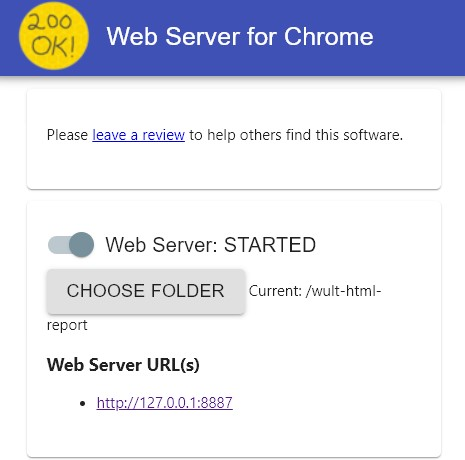
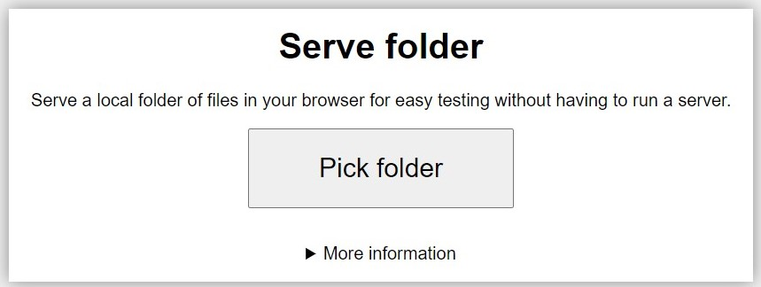
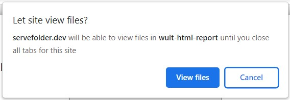
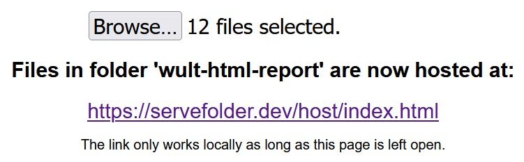
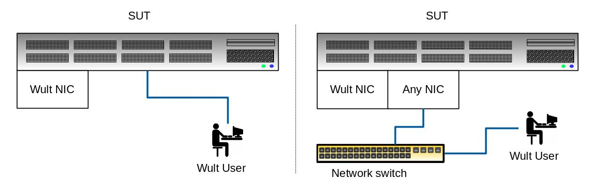

Howto
Table of Contents
Creating wult reports
Include only CC6 datapoints
Suppose you have a raw wult result for a Xeon platform, and you want to include only datapoints with core C6 (CC6) residency in an HTML report. Supposed you do not want to include datapoints with package C2 (PC2) and package C6 (PC6) residency. Here is how to do this:
wult report --include 'CC6% > 0 & PC6% == 0 & PC2% == 0' <raw_result>
This command specifies the --include option which says that wult should only select datapoints with CC6 residency greater than zero and zero PC6/PC2 residency.
Fewer datapoints in the HTML report
Suppose you have two raw wult results:
$ ls ivt-nic-c6-hfm-noaspm ivt-tdt-c6-hfm-noaspm
Suppose the raw results contained 1000000 datapoints and you've generated a diff for them:
$ wult report -o ivt-c6-hfm-nic-vs-tdt ivt-nic-c6-hfm-noaspm ivt-tdt-c6-hfm-noaspm $ du -sh ivt-c6-hfm-nic-vs-tdt/ 406M ivt-c6-hfm-nic-vs-tdt/
Suppose the diff is too large for your purposes (406M), and you want a diff that takes less storage.
One option for you is to include fewer datapoints in the report, for example 10000 instead of 1000000. You can use the --include option to select only the first 10000 datapoints.
$ wult report -o ivt-c6-hfm-nic-vs-tdt --include 'index < 10000' ivt-nic-c6-hfm-noaspm ivt-tdt-c6-hfm-noaspm $ du -sh ivt-c6-hfm-nic-vs-tdt 11M ivt-c6-hfm-nic-vs-tdt
Reading wult reports
Securely view wult HTML reports
Please consider disabling all untrusted browser extensions while viewing wult HTML reports.
Browser extensions have varying levels of permissions. For example, some extensions require that the user allows them to access and distribute the data they are viewing in-browser. This means that it is possible for some browser extensions to view and share the contents of wult HTML reports.
For Google chrome, you can inspect the permissions of your extensions by visiting chrome://extensions. In Firefox, the same thing can be done at about:addons.
Open wult reports locally
Suppose you have already generated a wult HTML report using the wult report command. If you wish to view this report locally, such as by copying the report onto your machine and opening index.html, you will need to host the report files locally. This is because modern browsers forbid loading data from local file-systems for security reasons.
This can be done in many ways, such as by using python -m http.server in the root directory of the report if you have Python3 installed.
Equally, if you have npm installed, you can install and then use the http-server package with the following commands:
$ cd <report-directory> $ npm install -g http-server $ http-server
The following methods offer a way to host report files locally through a graphical interface.
Chrome extension
By installing the "Web Server for Chrome" extension, you will be able to serve the reports locally without an internet connection in future through a graphical interface. However this extension is limited to browsers which are compatible with chrome extensions.
Disclaimer: we have not performed a security audit of this extension and it should be used at your own risk. The code is open source, under an MIT license and can be browsed on GitHub. The privacy policy for this extension is available on this page. At the time of writing (11 March 2022), this privacy policy states that "The application does not collect any user information". However we actively monitor neither the source code nor the privacy policy. Use at your own risk. See Securely view wult HTML reports for more privacy information.
Install the chrome extension from the chrome web store here.
Once the application is installed, it can be opened from the chrome web store, chrome app menu (chrome://apps/) or as a normal program on your computer. For example, on Windows 10, a shortcut will be added to the Chrome Apps directory in the start menu.
- Use the CHOOSE FOLDER button to select the wult HTML report directory of the report you want to view.
- A link should appear below the Web Server URL(s) heading. Click on this link to open and view the report.
servefolder.dev
This option should work on any modern browser (tested on 10 March 2022 working on Chrome, Firefox and Edge but not Internet Explorer). An internet connection is required to reach the site initially but following this, the report can be viewed independently of an internet connection until the Serve folder tab is closed.
Disclaimer: According to the privacy policy, servefolder.dev does not collect or transmit any personal info and only accesses the files locally in order to perform its function, futhermore the content of the files never leave your device. The code is open source and can be inspected on GitHub. We have audited the code live at servefolder.dev and can confirm that at the time of inspection (03 March 2022), it follows the privacy policy, but we do not continuously security audit the code. Use at your own risk.
- Open the servefolder website.
- 
- Click Pick folder and select the report directory in the dialog that appears.
- 
Your browser will then prompt you to confirm that you would like to share the files with the site. Choose View files or Upload depending on your browser to allow the report to be shared.

The report should now be viewable by clicking on the link shown. If you want to view a different report use the Browse... button.
Intel I210 NIC
How to use wult with Intel I210 NIC
First of all, read a word of warning here.
We recommend to stick with the hrt method, but if you have a specific reason to use the nic method with Intel I210, here are some hints.
Make sure to install an Intel I210-based NIC to the SUT (System Under Test) by plugging it into an appropriate PCIe slot. You do not need to connect the Intel I210 NIC to the network (no cable needed).
The important thing, however, is that you should not use the I210 NIC for anything else, it has to be dedicated to wult. It is OK to have multiple I210 adapters on your system, as long as one of them is dedicated to wult. Here are two example SUT configurations.
In the left picture the SUT has only one NIC dedicated to wult. The SUT is not connected to any network and the user is logged in via a physically attached keyboard and monitor.
In the right picture the SUT is connected to a LAN with another NIC, but it has a separate NIC, which is dedicated to wult. The user is logged in via SSH.
Which Intel I210 NIC to buy
Intel I210 is a 1GbE network chip, several vendors ship (or shipped) network cards based on the I210 chip. For example, we used the HP I210-T1 Network Adapter (E0X95AA).
There are other adapters out there. If you successfully used some of them with wult, let us know and we'll mention them here.